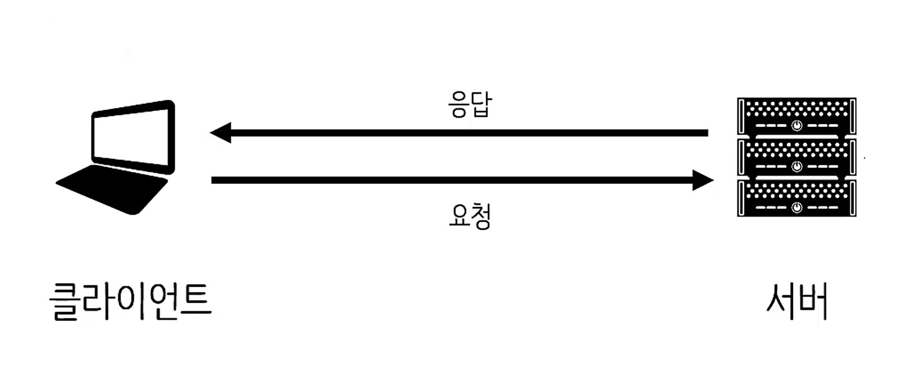

Soft squared를 시작하며
드디어 오늘 Soft squared 서버반 첫 수업을 시작했다. 예전부터 막연하게 백엔드 공부를 해보고 싶었다. 혼자 책보며 공부하는 것보다는 배우면서 실습도 해볼 수 있는 프로그램이 있나 찾아보다가 소프트 스퀘어드를 알게 되었다. 막학기 개강과 동시에 소프트 스퀘어드 서버반 등록을 했고 방금 막 첫 수업을 듣고 왔다.
그래서 서버가 뭔데?

네트워크와 같은 과목을 공부하다 보면 위의 사진을 쉽게 접했을 것이다. 사진을 보면 client가 서버에 요청을 하고 server는 요청에 해당하는 작업을 수행해서 응답하는 모습을 보인다. 현실 세계에 빗대어 봤을 때 클라이언트를 손님, 서버를 종업원이라고 볼 수 있다.
그렇다면 종업원이 굳이 필요할까?
해당 주제로 간단하게 토론을 했다. 종업원은 실질적으로 음식을 요리하는 사람이 아니기 때문에 종업원이 필요하지 않은 곳도 있을 것이다. 사장님이 모든 것을 해결하는 곳이나 손님이 많이 없어 한적한 곳이라면 더욱 그럴 것이다.
반면 종업원을 꼭 써야 하는 경우는 언제일까? 바로 손님이 너무 많이 몰려 사장 혼자서는 일을 해낼 수 없을 때이다. 여기에서 서버의 첫 번째 특징을 도출할 수 있다.
N(client) : 1(server) - 내 프로그램에 다수의 클라이언트를 수용할 수 있는지 고려해야 한다.
서버 == 클라이언트
우리가 종업원에게 메뉴판이나 물을 요청한 경우 그 즉시 가져다줄 것이다. 하지만 스테이크를 요청한 경우에는 상황이 다르다. 종업원 스스로 해결할 수 없는 일이기 때문에 주방장이나 요리사에게 주문을 전달하게 된다. 이 때 요청을 받기만 하던 종업원이 요청을 하는 입장이 된다. 따라서 다음과 같은 서버의 두 번째 특징을 알 수 있다.
서버 역할은 상대적 - 내 프로그램 내에서 클라이언트 역할을 하는 경우도 있다.
내 서버가 오픈 API를 이용해 데이터를 받아오는 경우에는 클라이언트처럼 요청하는 작업을 수행해야 한다. 항상 이러한 것을 염두해두고 서버를 구축하도록 하자. 서버가 상대적이라는 것을 기억하기 위해 소제목을 이렇게 쓴 것 뿐이지 서버와 클라이언트는 완전히 다르다.
서버단 (Server side)
우리가 흔히 말하는 서버는 생각보다 포괄적인 내용이다. server side이라고도 불리는 서버는 총 세 개의 파트로 나눌 수 있다.
Server program
유닉스 계열뿐 아니라 윈도우 기종에서도 운용할 수 있는 Apache나 비교적 가벼운 nginx가 있다.
Back-end Language
Javascript / Java / php 등 백엔드 언어는 굉장히 많다.
DBMS (+DB)
DBMS는 DataBase Management System의 약자로 MySQL / NoSQL 등이 있다.
위의 세 파트를 모두 만족시켜야 비로소 서버를 구축했다 고 볼 수 있다. 소프트 스퀘어드에서 내준 첫 과제는 Linux에 Apache, php, MySQL를 이용해 서버를 구축하는 것이다. 앞 글자를 따서 APM이라고 많이 불리는데 패키지 매니저 없이 컴파일 설치를 해야 하기 때문에 시간이 오래 걸릴 것 같다.